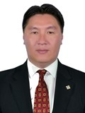

Member of the State Great Khural of Mongolia
SodbilegOtgonbileg
Member of the State Great Khural of Mongolia SODBILEG Otgonbileg
Mongolian People's Party
Education, graduated schools, education degree:
1998 Aiglon college
2002 International economist, University of Georgetown
Working experience:
2003 - 2004 Attaché, Department of Multilateral cooperation, Ministry of Foreign Affairs
2004 - 2005 Head of Foreign Project Department, Capitron Bank
2005 - 2007 First Deputy Director, NIK.Co. Ltd
2007 - 2012 Deputy Director, Petrovis Co. Ltd
2008 - 2012 Executive Director, Mon oil and gas Co. Ltd
2012 - 2016 Member of the State Great Hural (Parliament) of Mongolia
2016 Member of the State Great Hural (Parliament) of Mongolia
Awards:
2014 Order of “Polar Star”
Foreign language knowledge:
English; Russian; Chinese